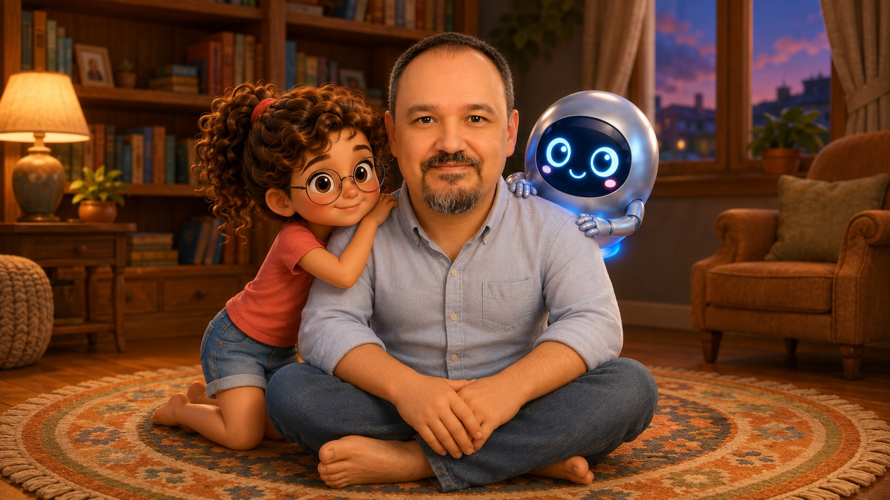

Meraklı Bilge ile yongadan doğmuş robot Yonga; kumdan yongaya, hızdan güce, bilgisayarların bütün sırlarını hikayelerle anlatıyor. Okuma bilen 7-12 yaş için.

Sorularının peşini bırakmaz. Bir yanıt aldığında hemen bir sonrakini sorar; anlamadığında anlamadığını söyler.

Bir yongadan doğmuş, süzülerek uçan robot. Anlatmayı sever, hiç acele etmez, hiçbir soruyu küçük görmez.
Her kitap tek bir fikri, baştan sona bir hikayeyle anlatır. Kapaklar gerçek kitap görselleridir.
Her alt seri, kitapları bir arada tutan tek bir PDF cilt olarak Zenodo arşivine kondu. Ciltlerin DOI numarası vardır: bağlantı hiç kırılmaz, kaynak gösterirken bunu kullanabilirsiniz.
Aşağıdaki on altı başlık serinin bütün konularını kapsıyor. Bunlar üniversitede bilgisayar mimarisi dersinde anlatılan gerçek konular: kumdan yongaya, sıfır ile bire, işlemcinin diline. Her kitap tek bir başlığı alıp baştan sona bir hikayeyle anlatıyor; kum, mutfak, karnaval, zarf ve yarış pisti benzetmeleriyle bir çocuğun anlayacağı biçimde. İlk iki seri 7-10 yaşa; buyrukları anlatan üçüncü seri ile işlemcinin içini anlatan dördüncü seri 9-12 yaşa uygun.
Bir avuç kum, saf bir plakaya ve içine milyarlarca parça sığan minik bir yongaya nasıl dönüşür?
Açık ve kapalı sayısız minik anahtar bir araya gelince nasıl sayılara, harflere ve resimlere dönüşür?
İşlemci, bellek, depo, giriş ve çıkış. Beş arkadaş el ele verince bilgisayar çalışmaya başlar.
Al, anla, yap. Bir bilgisayar her işi bu üç adımı saniyede milyarlarca kez tekrar ederek başarır.
Saat hızı, buyruk sayısı ve bir adımda yapılan iş: bir bilgisayarı gerçekten hızlı yapan nedir?
Tek aşçı yerine çok aşçı. Çekirdekler işi bölüşünce koca bir iş nasıl birlikte daha hızlı biter?
En yavaş kısmı hızlandır ya da işi büyüt: daha hızlı olmanın iki ayrı yolu vardır.
En çok kullanılanı hemen yanına koy: önbellek, o dar geçidi nasıl açar?
Yazılım ne ister, donanım ne yapar? İkisinin ortak sözleşmesi ve Getir-Çöz-Yürüt döngüsü.
İşlemcinin içindeki minik, süper hızlı kutular. Sayılar burada tutulur, buradan alınır.
Her buyruk bölmeli bir zarf gibidir; işlemci hangi bölmede ne yazdığını bilir, adresi öyle bulur.
Topla ve çıkar, karşılaştır ve dallan, yükle ve sakla: işlemcinin bildiği emir çeşitleri.
Elde bir basamaktan komşusuna nasıl geçer? İşlemcinin içindeki minik toplayıcılar zinciri.
Toplayan, çıkaran, karşılaştıran tek bir kutu: Aritmetik Mantık Birimi ve içindeki mantık işlemleri.
Dev yıldız uzaklıkları ile minik karınca ağırlıkları aynı kutuya nasıl sığar? Kayan nokta.
Bir buyruk hangi duraklardan geçer, kim işaret verir, tek vuruşta mı çok vuruşta mı biter?
Yirmi yıldır üniversitede bilgisayar mimarisi dersi veriyorum. Bu seri tek bir anda ortaya çıkmadı; aynı kavramları her yıl yeniden anlatırken biriken deneyimlerden doğdu. Hangi benzetmenin işe yaradığını, hangisinin öğrencinin zihninde karşılık bulmadığını sınıfta görerek öğrendim.
Serideki kitaplardan biri bunun güzel bir örneği. 2006 yılında TOBB ETÜ'de üçüncü sınıflara verdiğim ilk bilgisayar mimarisi dersinde, sınıfta iki Orhan vardı. O dönem sınav sorularından birini onlardan esinlenerek yazmıştım. Aradan yirmi yıl geçti ve o soru, bu serideki İki Orhan kitabına dönüştü. Kitaptaki Çorumlu Orhan ile Edirneli Orhan, gerçekten de o sınıfta oturan iki öğrencidir.
Yıllar içinde hazırladığımız üniversite düzeyindeki bilgisayar mimarisi kitabını bu yıl açık kaynak olarak yayımlamaya başladık. Tam o sırada kendime şu soruyu sordum:
Bu kavramlarla tanışmak için neden üniversiteyi beklemek gereksin?
Bir yonganın kumdan doğduğunu, transistörün açılıp kapanan bir kapı gibi çalıştığını, bilgisayarların dünyayı sıfırlar ve birlerle anlattığını çocuklar da anlayabilir. Yeter ki doğru yaşta, doğru dille ve iyi bir hikâyeyle anlatılsın.
Bilgisayar mimarisi yalnızca bilgisayarların nasıl çalıştığını anlatmaz; düşünmenin, düzen kurmanın ve sorun çözmenin yollarını da gösterir. Bir işi parçalara ayırmak, en yavaş adımı bulup iyileştirmek, birden fazla işi birlikte yürütmek, bir sınıra ulaşınca yöntemi değiştirmek. Bunların karşılığı mutfakta da vardır, bahçede de, sınıfta da.
Bu kitapların çocuklara farklı alanlar arasında bağ kurmayı öğretmesini ve analitik düşünme becerilerini geliştirmesini umuyorum. Bu seriyi hazırlamamın asıl nedeni de bu.
Her kitap tek bir temel fikir etrafında kuruluyor. Seçtiğim benzetme, yalnızca kavramı açıklamak için kullanılan kısa bir örnek olarak kalmıyor; hikâyeyi baştan sona taşıyor. Örneğin yarış pisti benzetmesi üzerine kurulan bir kitap, gerçekten başından sonuna kadar yarış pistinde geçiyor.
Sadeleştirmek uğruna hiçbir şeyi yanlış anlatmadım. Bir kavram bu yaşta doğru biçimde açıklanabiliyorsa anlattım; açıklanamıyorsa sonraya bıraktım. Çünkü çocuklar büyüdüklerinde, bugün öğrendiklerini silmek ya da yeniden düzeltmek zorunda kalmamalı.
Kitapların fikri, hikâye kurgusu, metinleri ve son denetimi bana ait. Görseller hazırlanırken yapay zekâ araçlarından yararlandım. Tüm sahneler aynı karakter föyüne bağlı kalınarak üretildi; ardından her görseli tek tek inceleyip gerekli düzeltmeleri yaptım.
Şu anda __COUNT__ kitap tamamlandı. İlk iki seri, okumayı bilen 7-10 yaş grubu için hazırlandı. Üçüncü seri biraz daha yoğun bir anlatıma sahip ve 9-12 yaş grubuna uygun. Dördüncü seri İşlemcinin İçi, bir işlemcinin içinde neler olduğunu anlatıyor ve o da 9-12 yaş grubuna uygun.

Seri okurlarıyla birlikte büyüyor. Çocuğunuzla ya da sınıfınızla okurken aklınıza takılan bir yer, gözünüze çarpan bir şey ya da sıradaki kitapta görmek istediğiniz bir konu olursa yazın. Gelen görüşlerin hepsini okuyoruz.
✉ Görüş bildirHangi kitabı ve sayfayı yazdığınızı belirtirseniz görüşünüzü yerinde değerlendirmek kolay olur.